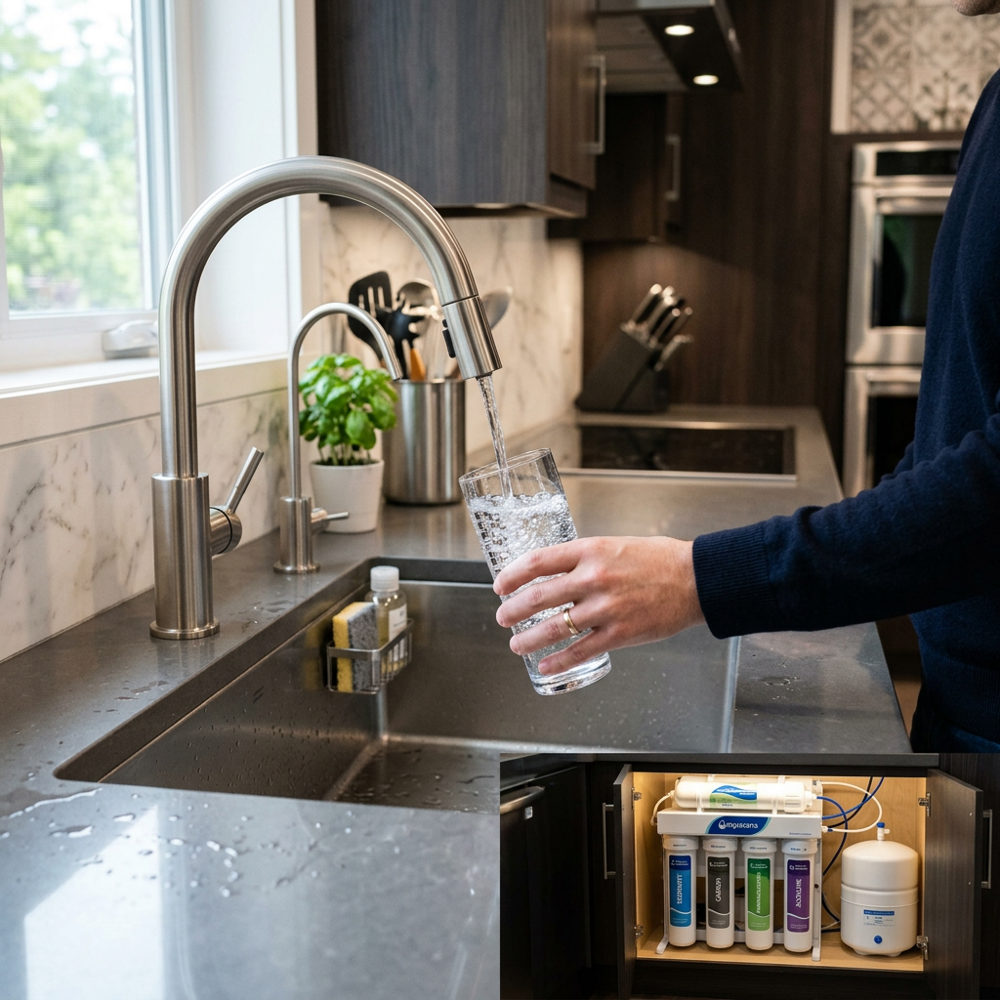
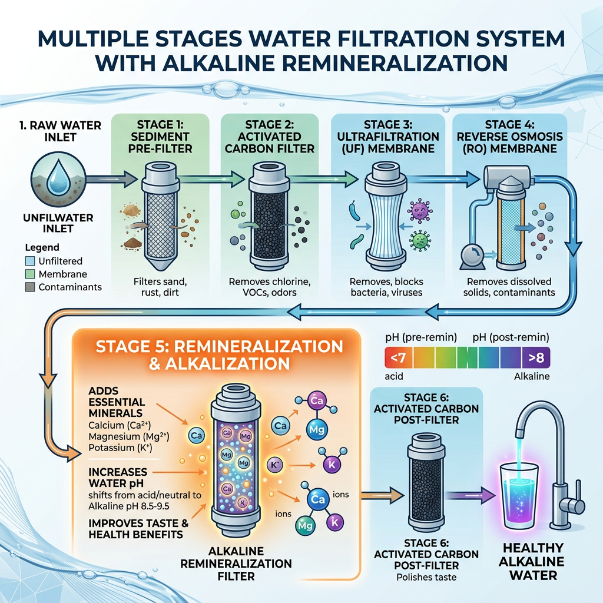
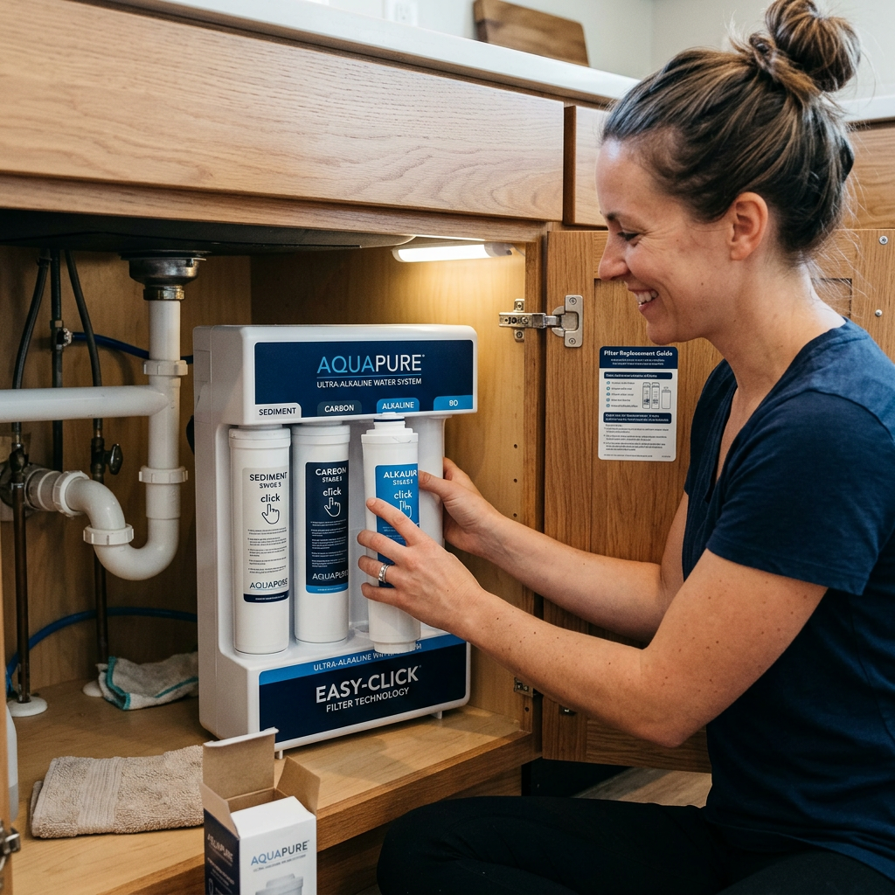

In the modern world, the quality of our tap water is increasingly under scrutiny. While municipal water treatment plants do their best, many homeowners are turning to an alkaline water filter for kitchen installation to ensure their family consumes the cleanest, healthiest water possible. An alkaline water filter for kitchen use does more than just remove chlorine; it fundamentally changes the chemistry of your water to support a balanced internal environment.

Standard tap water often has a neutral or slightly acidic pH. By installing an alkaline water filter for kitchen sinks, you introduce essential minerals back into the water, such as calcium, potassium, and magnesium. This process not only raises the pH level but also improves the taste, making your hydration routine much more enjoyable.
The primary reason most high-intent buyers search for an alkaline water filter for kitchen use is health. Proponents of alkaline water suggest that it can help neutralize acid in the bloodstream, boost metabolism, and improve nutrient absorption. When you use an alkaline water filter for kitchen cooking and drinking, you are effectively reducing the oxidative stress on your body.
Furthermore, an alkaline water filter for kitchen systems typically includes multi-stage filtration. This means that while the pH is being adjusted, harmful contaminants like lead, arsenic, and fluoride are being stripped away. It is the ultimate dual-purpose appliance for the health-conscious homeowner.
Click here to check priceWhen shopping for the perfect alkaline water filter for kitchen setups, you need to look beyond just the price tag. The best systems offer a combination of longevity, filtration efficiency, and ease of maintenance. A top-tier alkaline water filter for kitchen will usually feature a 5-stage or 7-stage filtration process.

To help you decide which alkaline water filter for kitchen is right for your home, we have compiled a comparison table of the most critical factors. High-intent buyers often look for the balance between mineral output and contaminant rejection.
| Feature | Standard Filtration | Premium Alkaline Water Filter for Kitchen |
|---|---|---|
| pH Range | 6.5 - 7.0 | 8.5 - 9.5 |
| Mineral Content | Low/None | High (Calcium, Magnesium) |
| Contaminant Removal | Basic | 99% (Lead, Fluoride, VOCs) |
| Installation Time | 30 Mins | 45-60 Mins |
| Filter Life | 3-6 Months | 6-12 Months |
As shown in the table, the alkaline water filter for kitchen provides a significantly better profile for those concerned with long-term wellness. While the initial setup might take slightly longer, the benefits of having an alkaline water filter for kitchen use far outweigh the minor inconvenience of installation.
Many people worry that adding an alkaline water filter for kitchen cabinets will be a plumbing nightmare. However, modern alkaline water filter for kitchen systems are designed for the DIY enthusiast. Most kits come with color-coded tubing and quick-connect fittings. Once your alkaline water filter for kitchen is installed, maintenance is as simple as swapping out cartridges once or twice a year.

Regularly replacing the cartridges in your alkaline water filter for kitchen ensures that the pH levels remain consistent and the water remains free of toxins. Neglecting this can lead to a drop in water pressure and a decrease in the alkalinity of the output.
If you are serious about your health, investing in an alkaline water filter for kitchen use is one of the smartest moves you can make. It provides an endless supply of antioxidant-rich water right at your fingertips. No more buying expensive bottled alkaline water that harms the environment—your alkaline water filter for kitchen provides a sustainable, cost-effective solution.
Don't settle for mediocre tap water. Upgrade your home with the industry-leading alkaline water filter for kitchen today and feel the difference in every sip. Whether you are brewing coffee, boiling pasta, or just filling up your gym bottle, the alkaline water filter for kitchen ensures you are getting the best quality possible.
Click here to check price